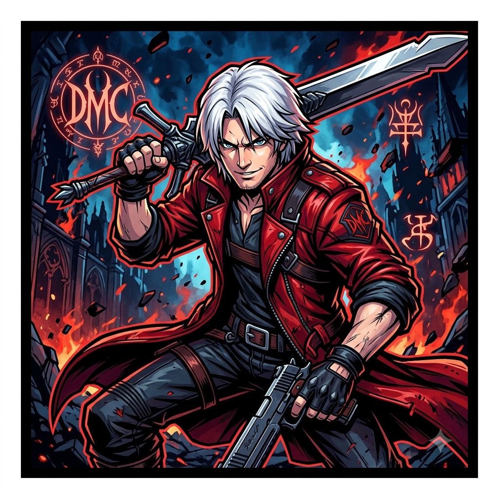

Meu primeiro post
Por: Mikaelly Maissa
Bem-vindos ao meu blog! Aqui conheceremos Dante, de Devil May Cry, um anime de fantasia e drama. Espero que gostem!
Aqui conheceremos mais da história desse personagem, aproveitem!

Por: Mikaelly Maissa
Bem-vindos ao meu blog! Aqui conheceremos Dante, de Devil May Cry, um anime de fantasia e drama. Espero que gostem!
Por:mikaelly maissa
Vergil é o irmão gêmeo de Dante na franquia Devil May Cry. Os dois são filhos de Sparda, um poderoso demônio que se rebelou contra o mundo demoníaco para proteger a humanidade, e de Eva, uma humana. Diferentemente de Dante, que luta para proteger as pessoas, Vergil busca poder acima de tudo. Após sofrer traumas e perdas durante a infância, ele passa a acreditar que a força é a única maneira de evitar que alguém o machuque novamente. Por isso, procura obter o poder demoníaco de seu pai, Sparda. Vergil é frio, sério, orgulhoso e extremamente habilidoso com a espada Yamato, capaz de cortar dimensões. Sua rivalidade com Dante é marcada por várias batalhas, mas, apesar das diferenças, os dois possuem uma ligação profunda como irmãos. Em Devil May Cry 5, é revelado que Vergil também é a identidade humana por trás de V, e que ele se separou de sua parte humana para buscar ainda mais poder, dando origem a Urizen. No fim, sua história mostra o conflito entre sua busca por força e os laços familiares que ainda o conectam a Dante..
Primeira parte do texto sobre computação.
Segunda parte do texto, que agora aparece em uma nova linha.
Fonte: The National Museum of Computing
 meu-blog/
│
├── index.html
├── style.css
├── script.js
└── imagens/
├── mouse-antigo.png
├── bluetooth.png
└── tecnologia.jpg
meu-blog/
│
├── index.html
├── style.css
├── script.js
└── imagens/
├── mouse-antigo.png
├── bluetooth.png
└── tecnologia.jpg

 primeiro-mouse.png
historia-computador.jpg
teclado-gamer.png
primeiro-mouse.png
historia-computador.jpg
teclado-gamer.png